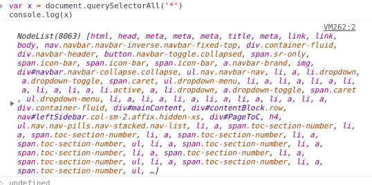
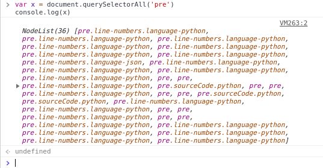
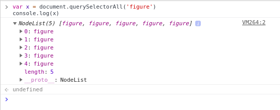
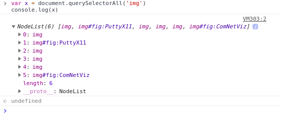

Assaignment#2 : Restaurant Site - Images and Some Style
Due: Tuesday, September 4th, 2018 by 12 Midnight
Weekly Section
1. JavaScript practice with simple loops: Write JavaScript code in your browsers developer tool console to produce a list of squares and cubes for numbers from 1 to 10. Take a screen capture showing the code and result. Include this screen shot as an image to answer this question.
2. CSS selector practice and web site structure: Go to the SDN Fun page on my website. We are going to use the developer tools and the DOM function document.QuerySelectorAll(css_selector_string) to test some selectors and look at document structure.
a. What is the CSS selector that you would use to select all the elements? How many are there?
Ans: To select all the

elements contained in
; elements? How many are there? Are there more or less than above. Why?
Ans: To select all the "code" in "pre" we use ('pre') in QuerySelectorAll, there are total of 36 nodes. They are less than ('*') because ('*') selects all the elements and ('pre') selects elements with pre.

c.What is the CSS selector that you would use to select all the < figure > elements? How many are there?
Ans: To select all the < figure > elements we use ("figure") in QuerySelectorAll, there are total of 5 nodes.

d.What is the CSS selector that you would use to select all the  elements? How many are there? Is this different from the above? Why?
Ans: The image tag represents the holding space for image, while the figure tag represents the unit or block of content that is self-contained which is a single unit.
elements? How many are there? Is this different from the above? Why?
Ans: The image tag represents the holding space for image, while the figure tag represents the unit or block of content that is self-contained which is a single unit.

3. JavaScript DOM practice: Go to the patent page on my website. Using JavaScript in the developer console do the following:
a.Find the number of patents on the page and put the number into a JavaScript variable with a name of your choosing. Hint each patent is in its own paragraph with class="patent" Take a screen shot of your code and use that as an answer.
b. Figure out how to get the title as a plain JavaScript string for any patent on the page. Show your method works with the 33rd patent listed. Take a screen shot of your code and answer. Hint each patent’s title is in a span element with class=Title and you can get content from a DOM element via the innerHTML and outerHTML properties.
4. Explain what the DOM is in your own words and how it relates to an HTML page and why it might differ.
Ans: DOM is basically the code of the web page accessed via web browser using the DevTools or inspect tool.
It is different from our html page because, there are times we make mistake in our html page, but DOM overcomes those mistakes and loads the page.
DOM can be described as interface between the web page and HTML page.